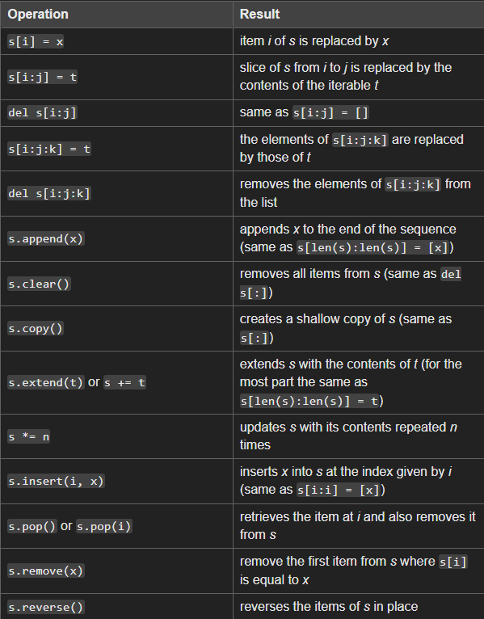

Lists are mutable sequences
, means it's values are changeable
different kind of data types can be stored
allows duplicate members
can be indexed using [ ]
Lists may be constructed in several ways:
- Using a pair of square brackets to denote the empty list: []
- Using square brackets, separating items with commas: [a], [a, b, c]
- Using a list comprehension: [x for x in iterable]
Using the type constructor: list() or list(iterable)
Operations in mutable sequences:


To determine if a specified item is present in a list use the in

Loop Through the Index Numbers


List Comprehension
newlist = [expression for iteam in iterable]
with if:
newlist = [- expression for iteam in iterable if condition]
with if else
newlist = [- expression if condition else expression for iteam in iterable]

Nested List Comprehension
 ->
-> 
 ->
->  ->
->

Note: - list2 = list1 is not copying, they both points to same list
- changes made in list2 will also change in list1
- need to use copy() for shallow copy(copy first layer, not additional
- layer such as nested list/types)(for additional layer need to use deepcopy() from
- copy module)